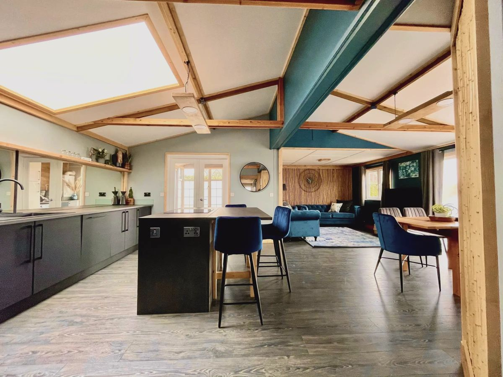
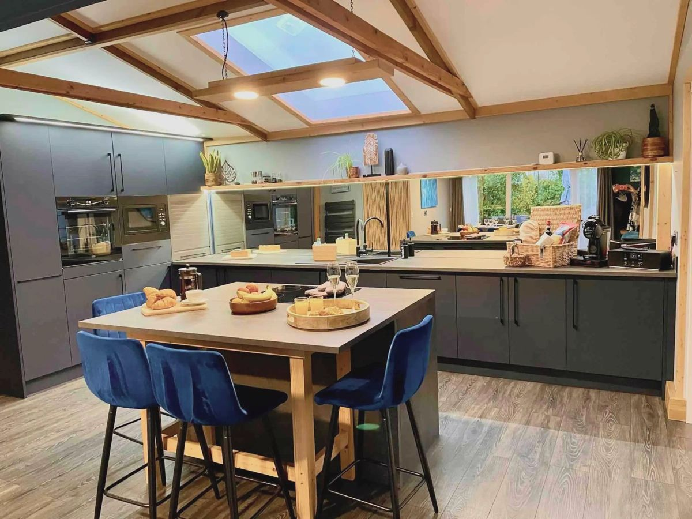
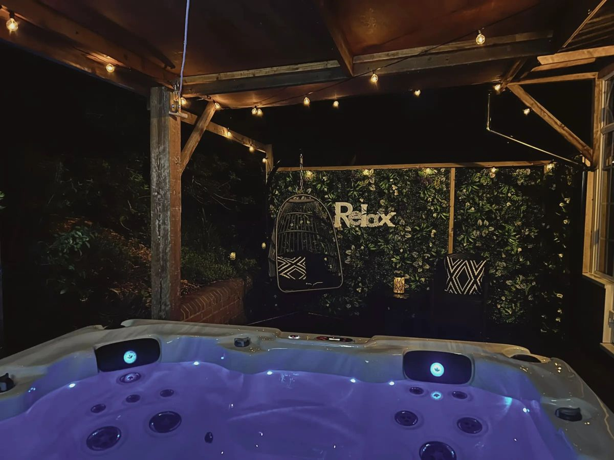
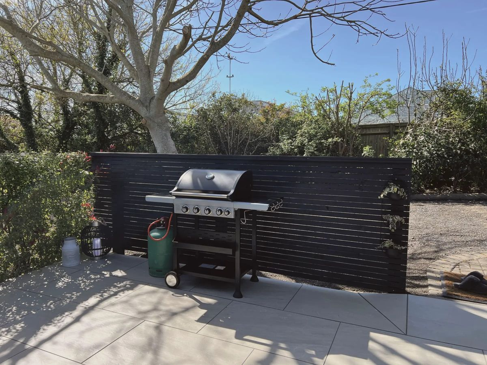
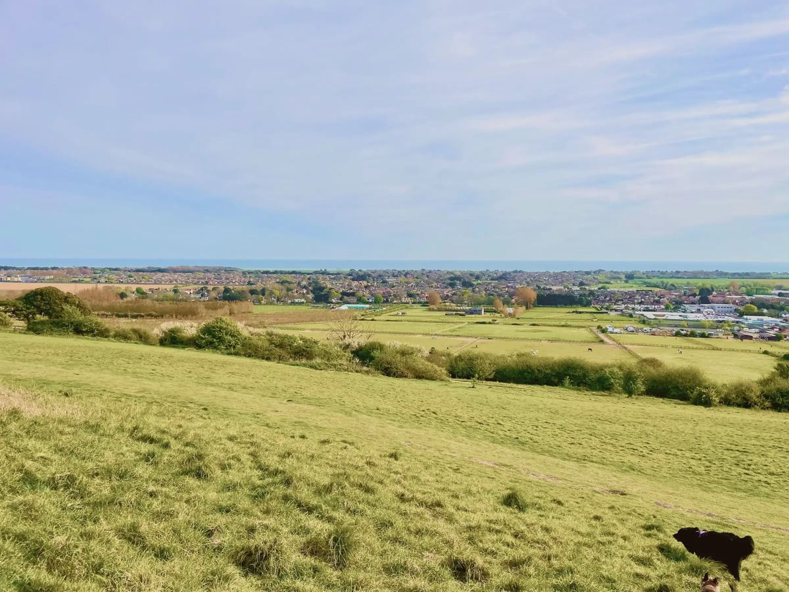
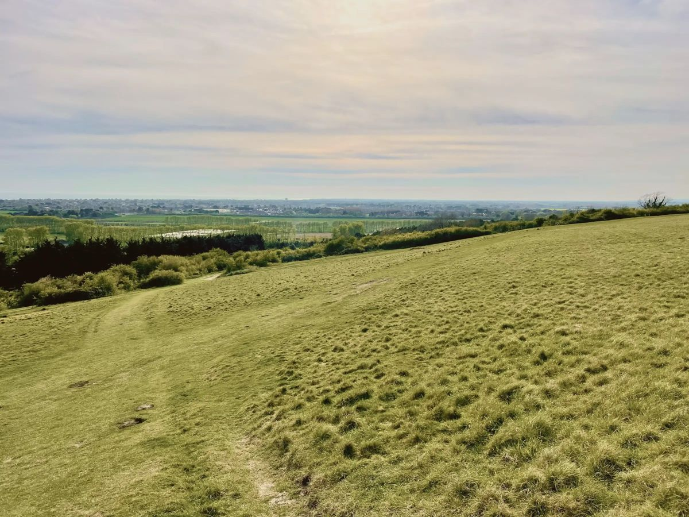
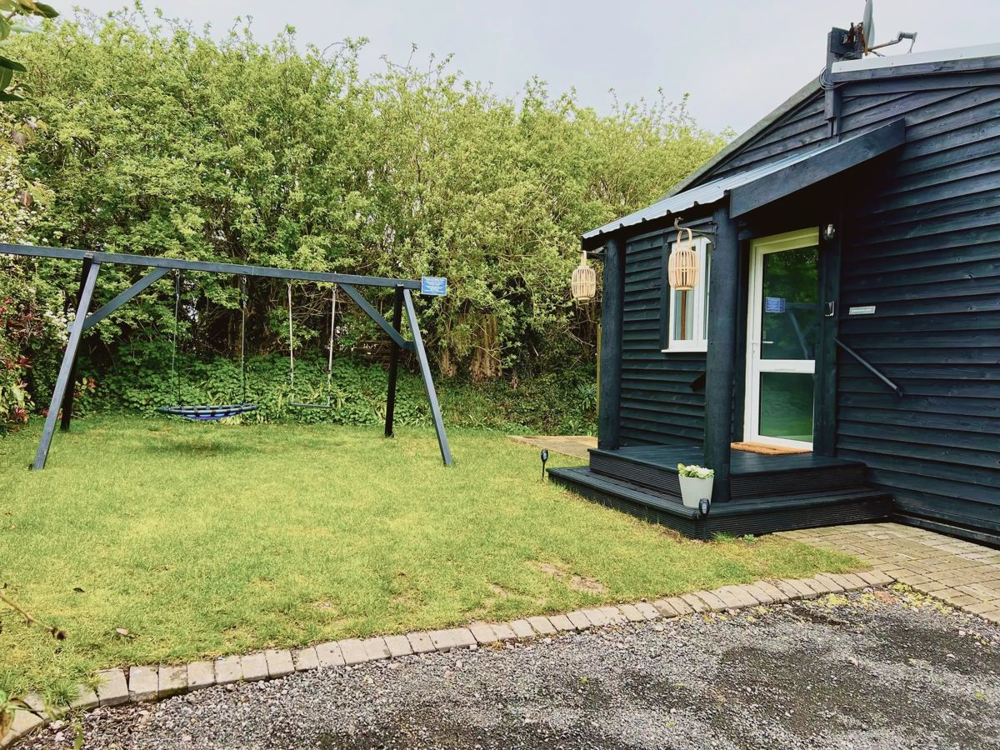
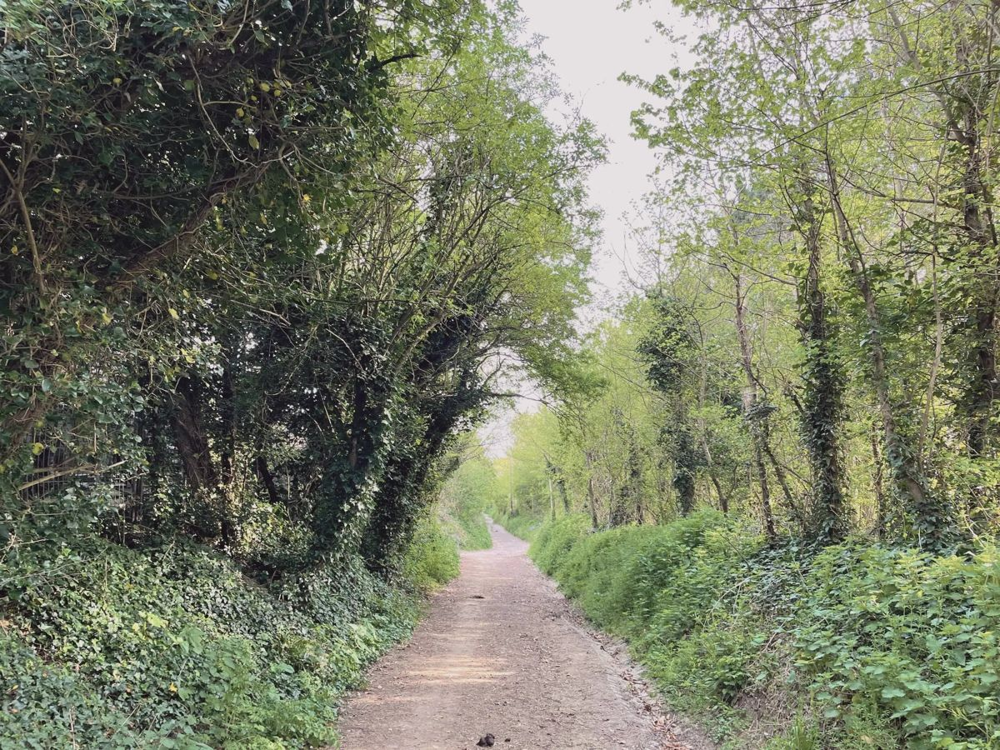
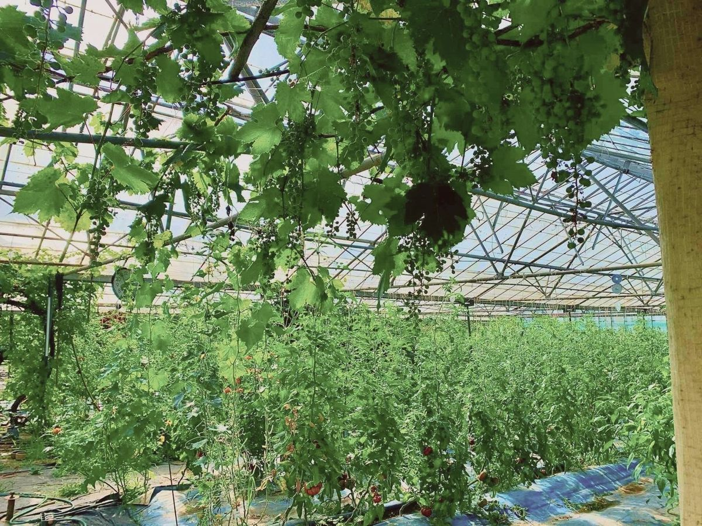

Draft welcome book, 28 pages. Highlighted lines are details only the owners know (25 of them); everything else has been checked.
Highdown Hideaways
Elderflower Lodge
Welcome. Everything you need for your stay is in here.
Hangleton Lane, Ferring, West Sussex BN12 6PP
Welcome to Elderflower Lodge. This was our family home for many happy years, and Luca made
a lot of the furniture himself, from things we've salvaged, old snooker tables and telegraph poles among them.
The eggs in your hamper are from our hens and the vegetables from our greenhouses. We live just across the
nursery, so if anything is missing or not working, text Trina on 07940 796860 and we'll sort it.
Network on the router card Password on the router card
Check-in
From 3pm. Want to drop bags earlier? Ask us.
Check-out
By 10am; the list is on page 26.
Your hosts
Trina 07940 796860, call or text info@highdownhideaways.com
Emergency
999 for fire, police or ambulance 111 for urgent medical advice
Tell 999
Elderflower Lodge, Foschini Nursery, Hangleton Lane, Ferring BN12 6PP. One line on finding the lodge from the lane (the postcode covers the whole nursery). Map position 50.8224, -0.4563.
Not working?
No hot water, the hot tub off, wifi down: text Trina, day or evening.
At a glance3
In an emergency
If there is a fire
Shout to wake everyone and leave by the nearest exit. Don't stop for belongings.
Meet at the meeting point, then count everyone.
Call 999 from outside. Read them the address on page 3.
Don't go back in. Use the fire blanket (kitchen wall) only on a small pan fire, and only if it's safe; otherwise just get out.
Exits: front door; doors to the decking. Smoke alarms: where. The plan is on page
5.
If you smell gas
Put out any flame and don't touch light switches or plugs.
Turn the gas off at the bottle: where the bottles and their valves are.
Open the doors and windows and go outside.
Call the gas supplier's emergency line, number from the bottle label, then Trina.
If the carbon monoxide alarm sounds
It's where the CO alarm is. Open the doors and windows, get everyone outside and call Trina.
Headache, dizziness or sickness: call 999.
The gas safety certificate is pinned where the gas safety record is displayed.
In an emergency4
Plan of the lodge
A simple plan: rooms, the two exits, the meeting point, alarms, fire blanket, first aid kit, stopcock and fuse box. From a phone photo of a sketch by Luca and Trina.
Where things are
Fire blanket
Kitchen wall
First aid kit
where
Torch
where
Water stopcock
where
Fuse box
where
Plan of the lodge5
Health and help
A&E
Worthing Hospital, Lyndhurst Road, Worthing BN11 2DH, open 24 hours. A&E is in the East Wing, ground floor. 5 miles, about 12 minutes by car.
Doctor
The Barn Surgery, 22 Ferring Street, Ferring BN12 5HJ, 01903 242638. When it's closed, call 111.
Pharmacy
Asda, Littlehampton Road, Ferring BN12 6PN, 10 minutes' walk. 01903 946288. Mon to Sat 9am to 9pm, Sun 10am to 4pm. At other times, 111 will find one open.
Vet at night
Vets Now, 18 Upper Brighton Road, Worthing BN14 9DL, 01903 954329. Weekday nights, weekends and bank holidays.
Your hosts
Trina 07940 796860, call or text. We live next door.
Defibrillator
On the wall of the Henty Arms, 2 Ferring Lane, by the beer-garden entrance, 24 hours. 15 minutes on foot, 3 by car. Call 999 first.
Police
101 for anything not an emergency.
Power cut
105, any time.
Water
No water, or a burst pipe: Southern Water, 0330 303 0368, 24 hours.
Health and help6

The lodge
Bedroom 1
King-size bed. En-suite wet room
Bedroom 2
King-size bed
Bedroom 3
Two single beds, joined on request
Main bathroom
Bath and rainfall shower. For bedrooms 2 and 3
Open-plan living
Kitchen, dining for 6 and lounge under skylights. Utility room with washer and dryer
Already here for you
Bedding, towels, bathrobes, beach towels, toiletries, coffee pods, and a welcome hamper with eggs from our
hens and produce in season.
Just ask
A travel cot and highchair, the twin beds joined into a double, a ramp for the two front steps, a shower seat
and a toilet frame.
The lodge7
Settling in
Heating
The thermostat is behind the TV, set to 18°C. Turn it up as you like.
Hot water
Comes from two gas bottles (there's no mains gas). If it runs cold, text us.
Hot nights
Fans are in where.
TV
A 50-inch TV in the lounge and a 40-inch TV in every bedroom: Freesat, Netflix, Prime Video and Disney+. Please log out of your own accounts before you leave.
Lights
The remote for the coloured lights is on the kitchen shelf; point it at the kettle.
Wifi
Network and password on page 3.
Games
Board games and books are in where.
Settling in8

Kitchen
Hob
Induction. If it won't respond, the child lock is on: hold + and − together to unlock.
Oven
Three lines for this oven: switching on, fan setting, clock (make and model)
Extractor
Switch on the side of the island.
Coffee
Dolce Gusto, pods provided. The silver dial sets the cup; the bean symbol is strength.
Dishwasher
Tablets where.
Also here
Microwave, blender and panini maker (in the cupboards), a second fridge and a freezer where.
Kitchen9
Laundry
Washer
In the utility room; liquid beside it. Use one setting: Quick35, or daily quick 30°, 1400 spin.
Dryer
A condenser dryer: empty the water drawer (top left) after each load.
Airer
In the cupboard next to the washer.
Iron
Iron and board in where.
Bins and recycling
Food
Caddy under the sink, then the grey bin.
Recycling
Blue wheelie bin: cans, tins, plastic bottles, paper and card, mixed.
Everything else
Green wheelie bin.
Where
Where the wheelie bins stand (the old book gave three places)
The lodge is on a septic tank: only toilet paper down the toilet, please. Nothing else,
including wipes and sanitary products.
Laundry and bins10

Hot tub
Opening and closing the lid
Pull the rope by the wooden pillar: the first half of the lid lifts.
From inside the tub, push the second half up.
To close, pull the rope: it brings both halves down. Close it every time you get out.
Keep it safe
Use the toilet and shower first. No fake tan, suntan lotion or skin cream, and no soap or oil in the water.
Stay in 15 minutes at a time, then get out and cool down.
Not after a heavy meal, alcohol or sedatives.
Keep your head above the water, and long hair away from the drains.
One person per seat.
Children only with an adult, and no children under 4.
Pregnant, unwell, or on medicine for your heart: ask a doctor first.
No glass in or near the tub.
Put the lid back down when you get out. We set the temperature. Water cloudy or cold? Don't add anything and don't use it; text Trina and we'll change it.
Hot tub11

Garden and barbecue
Gas barbecue
Use it only in the open, never under the gazebo or near the lodge walls.
Lid open. Turn on the gas at the bottle, then light the burners: how this model lights
After cooking, turn off the burners, then the bottle.
Children and dogs away from it while it's hot.
Garden
Fenced and private: swings, garden games and sun loungers. Children on the swings with an adult nearby.
Lights
The decking is lit at night: where the switch is.
Parking
Two cars by the lodge; more space on the nursery.
Next door
Our family nursery. By day you may see us in the greenhouses; in summer we sell our own produce.
Garden and barbecue12
House rules
Smoking
Not inside the lodge.
Quiet
From 11pm. We live next door, and so do our neighbours.
Guests
Only the people on the booking stay overnight. No parties or events.
Candles
Please don't light candles or anything with a flame indoors.
Ball games
Not in the garden, please.
Toilets
Septic tank: toilet paper only.
Bringing a dog
We welcome one small, well-behaved dog. Please keep it off beds and sofas, clear up after it in the garden,
and don't leave it alone in the lodge. Confirm these three dog rules
Dogs are welcome on Ferring beach all year; the summer bans are further along, at Littlehampton, Felpham
and Bognor. Please pick up after them.
House rules13

Walks from the door
Highdown Hill
16 minutes on foot, up Hangleton Lane. National Trust downland, an Iron Age hill fort and Miller's Tomb, with views to the sea.
Highdown Gardens
24 minutes on foot (5 by car), right at the top of the lane. Free chalk gardens, beside The Highdown pub.
Ferring beach
About 40 minutes (2 miles) by Langbury Lane and Ferring Lane, over the level crossing, to the Bluebird Cafe. 8 minutes by car.
Ferring village
20 minutes the same way: the Henty Arms, then the shops on Ferring Street.
Cissbury Ring
Iron Age hill fort, 15 minutes by car: park free at Storrington Rise, BN14 0HT, then walk 20 minutes uphill.
The footpath from Langbury Lane to Onslow Drive is closed at the railway until February 2027;
phone maps may still send you that way.
Walks from the door14
Around the lodge
Places are drawn at their real positions; roads and paths aren't shown. For directions, use the
Google Maps code on page 26.
Around the lodge15
The sea
Lifeguards
None from September until spring. If anyone is in trouble in the water, call 999 and ask for the Coastguard.
The beach
Shingle, with sand when the tide is far out. Check the day's tide times for Worthing before you swim or walk out on the sand.
Water quality
Goring, the nearest tested beach, was rated Good in 2025. In summer, the Environment Agency's Swimfo page gives the day's reading.
Step-free by the sea
Worthing seafront, 12 minutes by car, is the easiest. Free beach wheelchairs, for an adult and a child, are
lent from Splashpoint on the seafront: book ahead on the council's website, and bring help, as the shingle is
steep. There is a Changing Places toilet on the promenade opposite the Dome, 9am to 5pm.
With a Blue Badge, parking is free for up to 3 hours in the disabled bays of Worthing's open-air council
car parks.
Pub and tea room, Highdown Gardens. 20 minutes on foot. 01903 924670
The Castle
Pub on Goring seafront, dogs welcome. 8 minutes by car. 01903 245439
Shapla
Indian, The Pantiles, Ferring. 6 minutes by car. 01903 245566
La Cucina
Italian, Churchill Parade, Rustington. 7 minutes by car. 01903 783121
Fish Factory
Fish and chips, Brighton Road, Worthing. 12 minutes by car. 01903 207123
Fiordilatte
Pizza, gelato and vegan dishes, Worthing. 12 minutes by car. 01903 898156
Palm Court Pavilion
Worthing Pier, for an occasion or a group. 11 minutes by car. 01903 802141
By the sea
Bluebird Cafe
Ferring beach, dogs welcome, 8am to 5pm. 8 minutes by car. 01903 503033
Sea Lane Cafe
Goring beach, free car park, 8am to 5.30pm. 6 minutes by car. 01903 247847
Checked October 2026; drive times without traffic.
Eat and drink17
Takeaways
Enzo's
Pizza, Worthing. Order on its website, Just Eat or Deliveroo. 01903 212276
Shapla
Indian, Ferring. Order on its website. 01903 245566
Ting's
Chinese and Thai, 88 Ham Road, Worthing. Free delivery over £15 within 3 miles. 01903 208280
Goring Fish & Chips
299 Goring Road. Delivers in 30 to 50 minutes. 01903 246329
When you order, give the postcode BN12 6PP and check they deliver here; drivers will
need the directions on page 24.
Local food and drink
Wiston Estate
Sparkling wine from the Downs, North Farm, Washington RH20 4BB. Cellar door and tastings Wednesday to Sunday, 10am to 4pm; no under-18s at tastings. 15 minutes by car.
Arundel market
Farmers' market on the third Saturday of the month, 9am to 1pm, in the town centre. 12 minutes by car.
Shoreham market
Farmers' market on the second Saturday, 9am to 1pm, East Street; none in January. 20 minutes by car.
Takeaways and local food18

Days out
Arundel Castle
20 minutes by car. Castle, keep and gardens, April to the start of November; closed Mondays except bank holidays and August. 01903 882173
Swanbourne Lake
In Arundel Park. Rowing boats at weekends from March to October, and every day in the school holidays, weather allowing. 01903 884293
Worthing
15 minutes by car: the pier, the beach and the Dome, a 1911 cinema on the seafront (01903 823112).
Splash Point
Pools and gym on Worthing seafront. 12 minutes by car. 01903 905050
Rustington Golf Centre
Course, driving range and Toptracer bays, Golfers Lane, Angmering. 7 minutes by car. 01903 850790
Checked October 2026. Drive times are without traffic.
Days out19
Further afield
Brighton
40 minutes by car. By train from Goring-by-Sea, about 35 minutes, every half hour by day: the Lanes, the pier and the beach.
Lewes
Just beyond Brighton on the A27. By train, change at Brighton. A castle and old streets.
Chichester
35 minutes by car. By train from Goring-by-Sea, about 25 minutes direct; the cathedral is 10 minutes' walk from the station.
West Wittering
A long sandy beach beyond Chichester. About 40 minutes by car without traffic.
Goodwood and the races
Goodwood
Motor circuit and racecourse near Chichester, 45 minutes by car. In 2027: Members' Meeting 10 and 11 April; Festival of Speed 15 to 18 July; Qatar Goodwood Festival (racing) 27 to 31 July; Revival from 17 September. Ticket office 01243 755055.
Event days
Follow Goodwood's road signs rather than the satnav, and allow far longer. Car parks are on grass.
Fontwell Park
Jump racing 20 minutes away, about 20 days a year, including Boxing Day.
Further afield20
Winter and wet days
WWT Arundel
Wetland reserve, open every day 10am to 4.30pm; closed Christmas Day, and from 2pm on Christmas Eve. About 15 minutes by car. 01903 883355
Worthing Museum
Museum and art gallery in the town centre. Wednesday to Saturday, 10am to 5pm; Thursdays to 8pm.
Amberley Museum
Open-air museum of working life in the Arun valley, 20 minutes by car. Open some winter days until just before Christmas; check its website for 2027. 01798 831370
Indoors
The Dome cinema and the Splash Point pools: page 19. Soft play and bowling: page 22.
Arundel
The castle closes from November to March, but the town is still worth the trip.
Winter and wet days21

With children
Ferring Country Centre
Rife Way, Ferring: animals, soft play and a cafe. 5 minutes by car. 01903 245078
Out of Bounds
Golfers Lane, Angmering: bowling, climbing, soft play and adventure golf. 7 minutes by car. 01903 788588
Fishers Farm Park
Wisborough Green: a big farm park for a whole day. About 35 minutes by car. 01403 700063
TeamSport
Indoor go-karting at Lancing, ages 8 and up. About 17 minutes by car.
With children22

Getting about
Bus
The nearest stop is Langbury Lane, 5 minutes' walk. The 701 runs from there to Worthing one way and Littlehampton the other, up to every 15 minutes by day; the 9, 10 and 11 stop there too. Times on the Stagecoach app.
Trains
Goring-by-Sea station, 1.5 miles (about 28 minutes on foot); Angmering station, 1.9 miles. Step-free at Angmering needs the staff ramp: ask at the station.
10 minutes' walk, on Littlehampton Road, with a pharmacy.
Farm shop
Rassasy Farm Shop and Deli, 50 Ferring Street, in the village.
Deliveries
Asda, Tesco and Sainsbury's deliver here, and takeaways on Just Eat. One line for drivers on finding the lodge
Our produce
In summer we open the greenhouses and sell what we grow.
Shops and deliveries24

Our story
We are Luca and Trina, and live on our nursery with our children and our dad who lives next door. We are a family built upon Italian traditions; great food, love and a glass of vino! We have spent many years renovating our nursery and converting the old packing shed into our new family home after spending many happy years living in Elderflower lodge before converting it into our own holiday let so people can come and enjoy what we have created. Every summer we open the greenhouses to sell our produce to the local community.
Luca and Trina
Our story25
Before you go
Check-out is by 10am. Please:
Leave used dishes in the dishwasher or the sink.
Put rubbish and recycling in the kitchen bins (page 10).
Gather used towels in the bathroom. Leave the beds as they are; we'll strip them.
Log out of your TV accounts and check for chargers and belongings.
Close the windows and lock the doors.
Put the keys back in the key safe.
Find us on Google Maps
For directions here. Scan with your phone camera.
If you enjoyed your stay, a few words where you booked mean a great deal to a small family business.
If you post about it, tag us @highdownhideaways.